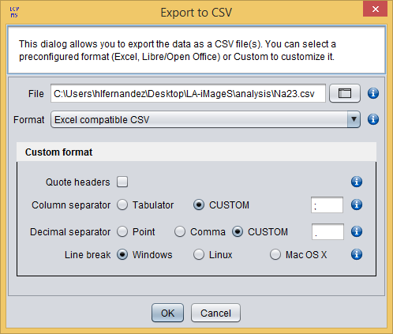

Export as CSV
The CSV (Comma Separated Values) is a general format to store tabular results in plain text files. The main advantage of this format is that many data analysis and manipulation software applications are capable to import data stored in this format.
The export menu offers you two options to export your data as CSV: Export As CSV, to export the data of the element that is being currently displayed, and Export All as CSV, to export the data of each element in the dataset into CSV files (one CSV per element).
By clicking the Export As CSV/All as CSV options, a new dialog will appear allowing you to select:
- File:
- Export As CSV: the file where the data will be stored. By default, this file is element.csv in your home folder.
- Export All as CSV: the directory where the data will be stored. By default, this directory is your home folder.
- Format: the CSV format to export the quantification table. La-iMageS includes two preconfigured formats for Excel and Open/LibreOffice applications. In case you need a specific CSV format suitable for other applications, you can select the Custom option, which allows you to configure the format as will be explained later
- Keep error codes: if this option is selected, then the error codes will be written in the CSV file.
As commented above, you can customize the CSV format by selecting the Custom format option. When selecting this option, a custom format panel will be shown in the dialog, as shown in 5. The options included in this panel will allow you to specify the following export parameters:
- Quote headers: if this option is selected, then headers will be quoted in the resulting CSV file.
- Column separator: the separator character/s between columns.
- Decimal separator: the character to use as decimal separator. Note that the decimal separator should be different from the column separator; otherwise, it may result in an unreadable CSV file.
- Line break: the type of line break depending in the target operating system.

Export As CSV dialog showing the format customization